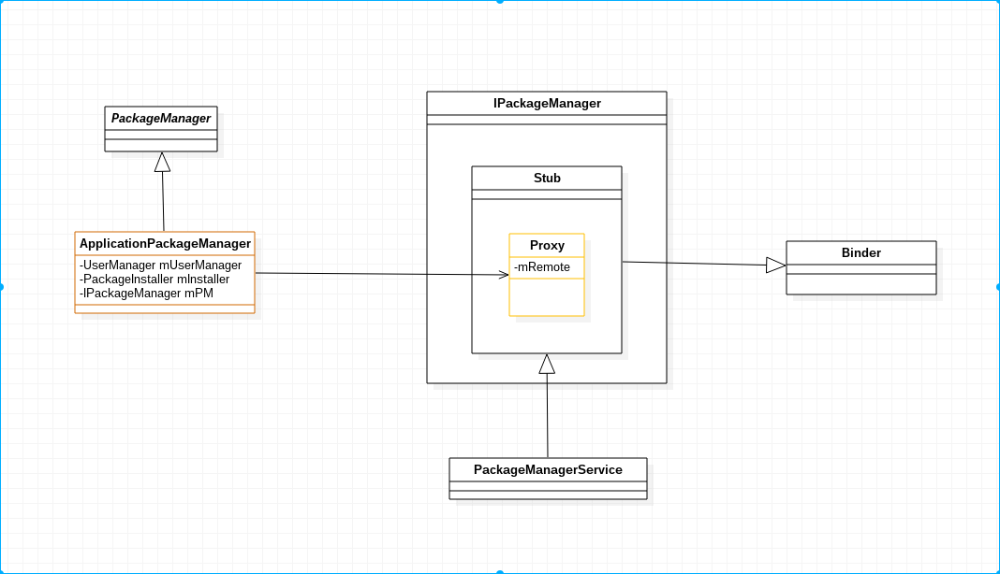

1. Android 6 PMS install APK prelude
Android core service
Android underlying development
I introduced how the PMS is started. Now I will show you how to install an APK
on the Android system.
When the PMS was introduced earlier, it has been determined that the PMS will be
registered as a service. When the Android system needs to use a service, it
usually finds its client agent and then uses the functions provided by the PMS
through its proxy.

As shown in FIG:
IPackageManager uses the Android AIDL language to define the business
functions to be provided by the server, then the AIDL compiler will
automatically generate the IPackageManager interface code, its subclass Stub
inherits the Binder and implements the IPackageManager interface.
PMS inherits Stub, so it can be used as a server.
An internal class Proxy in the Stub has an IBinder member variable mRemote,
which can communicate with the server using mRemote.
The client side is processed by using the ApplicationPackageManager object
returned by the Context.getPackageManager function. The internal component
variable mPM of the ApplicationPackageManager points to the object of the
Proxy type. This means that you can communicate with the PMS.
This is a typical Binder service model. Many key services of the Android system
use the binder service model. Finally, the proxy of the PMS obtained by the
upper layer is the implementation class ApplicationPackageManager object of the
abstract class of PackageManager.
1.1. How to get a PMS proxy object
Use the following code to get a proxy object to the PMS:
Context ct = getApplicationContext();
PackageManager pm = ct.getPackageManager();
Where getPackageManager source location:
Android-6/frameworks/base/core/java/android/app/ContextImpl.java
The implementation code is as follows:
public PackageManager getPackageManager() {
if (mPackageManager != null) {
return mPackageManager;
}
IPackageManager pm = ActivityThread.getPackageManager();
if (pm != null) {
// Doesn't matter if we make more than one instance.
return (mPackageManager = new ApplicationPackageManager(this, pm));
}
return null;
}
ActivityThread.getPackageManager source location:
Android-6/frameworks/base/core/java/android/app/ActivityThread.java
public static IPackageManager getPackageManager() {
if (sPackageManager != null) {
//Slog.v("PackageManager", "returning cur default = " + sPackageManager);
return sPackageManager;
}
IBinder b = ServiceManager.getService("package");
//Slog.v("PackageManager", "default service binder = " + b);
sPackageManager = IPackageManager.Stub.asInterface(b);
//Slog.v("PackageManager", "default service = " + sPackageManager);
return sPackageManager;
}
As long as you understand the Android binder framework, you will immediately
find out that this is nothing more than querying the SM for a service named
"package". If the SM query is successful, return a reference object named
"package" service, and then use asInterface to convert it. Proxy object.
When the PMS registers with the SM, the name is indeed "package".
Android-6/frameworks/base/services/core/java/com/android/server/pm/PackageManagerService.java
public static PackageManagerService main(Context context, Installer installer,
boolean factoryTest, boolean onlyCore) {
PackageManagerService m = new PackageManagerService(context, installer,
factoryTest, onlyCore);
ServiceManager.addService("package", m);
return m;
}
The call to the PackageManager is eventually converted to a call to the PMS.
1.2. Install apk
You can use the following code to call to install an apk file that is already in
the device's apk.
File apkfile = new File("/data/local/tmp/demo.apk");
Uri uri = Uri.fromFile(apkfile);
Intent intent = new Intent(Intent.ACTION_VIEW);
intent.setDataAndType(uri,"application/vnd.android.package-archive");
startActivity(intent);
Source path:
Android-6/packages/apps/PackageInstaller
The system application PackageInstaller will respond to this intent.
It's in AndroidMainifest.xml:
<activity android:name=".PackageInstallerActivity"
android:configChanges="orientation|keyboardHidden|screenSize"
android:excludeFromRecents="true">
<intent-filter>
<action android:name="android.intent.action.VIEW" />
<action android:name="android.intent.action.INSTALL_PACKAGE" />
<category android:name="android.intent.category.DEFAULT" />
<data android:scheme="file" />
<data android:mimeType="application/vnd.android.package-archive" />
</intent-filter>
.......
In other words, PackageInstallerActivity will actually respond to this intent.
There are two important members in PackageInstallerActivity
PackageManager mPm;
PackageInstaller mInstaller;
Where mPm is the proxy object of the PMS, and mInstaller is the proxy object of
the PackageInstallerService. After the PMS class, the PackageInstallerService is
cohesive, and when the PMS is started, the amount of change is initialized.
When the PackageInstallerActivity activity is started
protected void onCreate(Bundle icicle) {
super.onCreate(icicle);
mPm = getPackageManager();
mInstaller = mPm.getPackageInstaller();
..............
These two objects were obtained from the beginning.
Continue the onCreate of PackageInstallerActivity:
if (PackageInstaller.ACTION_CONFIRM_PERMISSIONS.equals(intent.getAction())) {
...............
} else {
//This branch of walking
mSessionId = -1;
mPackageURI = intent.getData();
mOriginatingURI = intent.getParcelableExtra(Intent.EXTRA_ORIGINATING_URI);
mReferrerURI = intent.getParcelableExtra(Intent.EXTRA_REFERRER);
}
.......................
if ("package".equals(mPackageURI.getScheme())) {
.................
} else {
// This branch of walking
mInstallFlowAnalytics.setFileUri(true);
final File sourceFile = new File(mPackageURI.getPath());
PackageParser.Package parsed = PackageUtil.getPackageInfo(sourceFile);
// Check for parse errors
if (parsed == null) {
Log.w(TAG, "Parse error when parsing manifest. Discontinuing installation");
showDialogInner(DLG_PACKAGE_ERROR);
setPmResult(PackageManager.INSTALL_FAILED_INVALID_APK);
mInstallFlowAnalytics.setPackageInfoObtained();
mInstallFlowAnalytics.setFlowFinished(
InstallFlowAnalytics.RESULT_FAILED_TO_GET_PACKAGE_INFO);
return;
}
mPkgInfo = PackageParser.generatePackageInfo(parsed, null,
PackageManager.GET_PERMISSIONS, 0, 0, null,
new PackageUserState());
mPkgDigest = parsed.manifestDigest;
as = PackageUtil.getAppSnippet(this, mPkgInfo.applicationInfo, sourceFile);
}
The code logic is still relatively easy to understand, from the intent to get
the path to the apk to be installed. Call PackageUtil.getPackageInfo to resolve.
Where PackageUtil.getPackageInfo:
public static PackageParser.Package getPackageInfo(File sourceFile) {
final PackageParser parser = new PackageParser();
try {
PackageParser.Package pkg = parser.parseMonolithicPackage(sourceFile, 0);
parser.collectManifestDigest(pkg);
return pkg;
} catch (PackageParserException e) {
return null;
}
}
Is there a familiar feeling, when the PMS is started, the scan parsing APK does
not use the PackageParser.
Android-6/frameworks/base/core/java/android/content/pm/PackageParser.java
public Package parseMonolithicPackage(File apkFile, int flags) throws PackageParserException {
if (mOnlyCoreApps) {
....................
}
final AssetManager assets = new AssetManager();
try {
final Package pkg = parseBaseApk(apkFile, assets, flags);
pkg.codePath = apkFile.getAbsolutePath();
return pkg;
} finally {
IoUtils.closeQuietly(assets);
}
}
Is to call parseBaseApk to parse the incoming apk file, this process is actually
parsing the AndroidMainfest.xml file in the apk, the information in the village
is thick, and the analysis results are stored in the PackageParser.Package
object.
The parsed Package object is then converted to a PackageInfo object by the
generatePackageInfo() method.
Continue the onCreate of PackageInstallerActivity:
// Block the install attempt on the Unknown Sources setting if necessary.
if (!requestFromUnknownSource) {
initiateInstall();
return;
}
// If the admin prohibits it, or we're running in a managed profile, just show error
// and exit. Otherwise show an option to take the user to Settings to change the setting.
final boolean isManagedProfile = mUserManager.isManagedProfile();
if (!unknownSourcesAllowedByAdmin
|| (!unknownSourcesAllowedByUser && isManagedProfile)) {
showDialogInner(DLG_ADMIN_RESTRICTS_UNKNOWN_SOURCES);
mInstallFlowAnalytics.setFlowFinished(
InstallFlowAnalytics.RESULT_BLOCKED_BY_UNKNOWN_SOURCES_SETTING);
} else if (!unknownSourcesAllowedByUser) {
// Ask user to enable setting first
showDialogInner(DLG_UNKNOWN_SOURCES);
mInstallFlowAnalytics.setFlowFinished(
InstallFlowAnalytics.RESULT_BLOCKED_BY_UNKNOWN_SOURCES_SETTING);
} else {
initiateInstall();
}
requestFromUnknownSource is true because we did install it from an unknown
source and did not install it through the built-in app store.
Do some checks here, for example, if you do not open the allowable installation
location source in the settings, this will pop up a prompt box, and then the
user goes to the settings to open the allow location source installation.
In the end, the method of initialInstall is called.
private void initiateInstall() {
String pkgName = mPkgInfo.packageName;
// Check if there is already a package on the device with this name
// but it has been renamed to something else.
String[] oldName = mPm.canonicalToCurrentPackageNames(new String[] { pkgName });
if (oldName != null && oldName.length > 0 && oldName[0] != null) {
pkgName = oldName[0];
mPkgInfo.packageName = pkgName;
mPkgInfo.applicationInfo.packageName = pkgName;
}
// Check if package is already installed. display confirmation dialog if replacing pkg
try {
// This is a little convoluted because we want to get all uninstalled
// apps, but this may include apps with just data, and if it is just
// data we still want to count it as "installed".
mAppInfo = mPm.getApplicationInfo(pkgName,
PackageManager.GET_UNINSTALLED_PACKAGES);
if ((mAppInfo.flags&ApplicationInfo.FLAG_INSTALLED) == 0) {
mAppInfo = null;
}
} catch (NameNotFoundException e) {
mAppInfo = null;
}
mInstallFlowAnalytics.setReplace(mAppInfo != null);
mInstallFlowAnalytics.setSystemApp(
(mAppInfo != null) && ((mAppInfo.flags & ApplicationInfo.FLAG_SYSTEM) != 0));
startInstallConfirm();
}
The code logic is also very simple, mainly to determine whether the app is
already installed in the current system. If it is installed, set the replacement
flag and other information, then call startInstallConfirm, a dialog box will pop
up asking if you need to install this application, and the app will What
permissions are obtained, etc.
Because the apk has been parsed before, it is very simple to show which
permissions it has.
When clicking the OK button, execute the following code:
public void onClick(View v) {
if (v == mOk) {
if (mOkCanInstall || mScrollView == null) {
mInstallFlowAnalytics.setInstallButtonClicked();
if (mSessionId != -1) {
.................
} else {
// Take this branch
startInstall();
}
} else {
mScrollView.pageScroll(View.FOCUS_DOWN);
}
} else if(v == mCancel) {
........................
}
}
The main work is done by startInstall():
private void startInstall() {
// Start subactivity to actually install the application
Intent newIntent = new Intent();
newIntent.putExtra(PackageUtil.INTENT_ATTR_APPLICATION_INFO,
mPkgInfo.applicationInfo);
newIntent.setData(mPackageURI);
newIntent.setClass(this, InstallAppProgress.class);
newIntent.putExtra(InstallAppProgress.EXTRA_MANIFEST_DIGEST, mPkgDigest);
newIntent.putExtra(
InstallAppProgress.EXTRA_INSTALL_FLOW_ANALYTICS, mInstallFlowAnalytics);
String installerPackageName = getIntent().getStringExtra(
Intent.EXTRA_INSTALLER_PACKAGE_NAME);
if (mOriginatingURI != null) {
newIntent.putExtra(Intent.EXTRA_ORIGINATING_URI, mOriginatingURI);
}
if (mReferrerURI != null) {
newIntent.putExtra(Intent.EXTRA_REFERRER, mReferrerURI);
}
if (mOriginatingUid != VerificationParams.NO_UID) {
newIntent.putExtra(Intent.EXTRA_ORIGINATING_UID, mOriginatingUid);
}
if (installerPackageName != null) {
newIntent.putExtra(Intent.EXTRA_INSTALLER_PACKAGE_NAME,
installerPackageName);
}
if (getIntent().getBooleanExtra(Intent.EXTRA_RETURN_RESULT, false)) {
newIntent.putExtra(Intent.EXTRA_RETURN_RESULT, true);
newIntent.addFlags(Intent.FLAG_ACTIVITY_FORWARD_RESULT);
}
if(localLOGV) Log.i(TAG, "downloaded app uri="+mPackageURI);
startActivity(newIntent);
finish();
}
}
Create an Intent here, set the data and which class to send to, call
startActivity (newIntent), start InstallAppProgress.